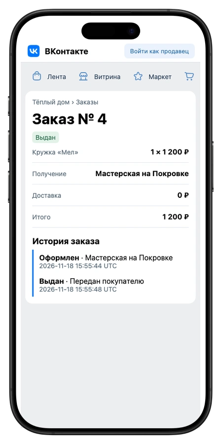
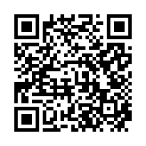

Где искать первый эффект
У 493 сообществ есть товар, просмотры товарного контента и аудитория больше 1 тыс., но не больше 100 тыс. подписчиков. Заказы получили 121 из них.


Сценарии магазина, кабинет продавца и демонстрация заказа.

Сравнение каналов продаж, задачи покупателя и карта пути.
Выбор сообществ, метрики заказов и дизайн проверки.
Бюджет, денежный поток и решение о расширении пилота.

бизнес с активным товаром в сентябрьской выборке кейса
У 493 сообществ есть товар, просмотры товарного контента и аудитория больше 1 тыс., но не больше 100 тыс. подписчиков. Заказы получили 121 из них.
заказа на бизнес в выбранном сегменте за сентябрь
Цель соответствует 0,76 дополнительного заказа на бизнес за 30 дней. В знаменатель входят все участники, даже с нулём заказов.
Доли открытий карточек внутри VK за сентябрь 2026 года
Покупатель ищет товар и сравнивает предложения. Витрина собирает ассортимент продавца.
Отправной точкой служит объявление. Детали нестандартной покупки часто уточняют в переписке.
Вещь можно увидеть в ролике или эфире и открыть её карточку во время просмотра.
Покупатели с двумя и более заказами за сентябрь, по данным кейса
Больше 1 000 и до 100 000 подписчиков включительно. В группе есть магазины с заказами и без них.
Сравниваем сообщества с активным товаром внутри диапазона подписчиков. Сентябрь 2026 года.
С товарными просмотрами 84 из 396. Без просмотров 66 из 1 059.
С товарными просмотрами 37 из 97. Без просмотров 25 из 132.
На старте показываем товар с неполными условиями. Продавец исправляет карточку и проверяет её со стороны покупателя.
В кабинете нужны очередь заказов, выдачи, причины отмен и результат по каждой записи.
Сентябрьская связь между просмотрами и заказами помогает выбрать сегмент. Вклад инструмента проверит эксперимент.
Точки показывают предполагаемую эмоцию в конце этапа по последнему шагу участника. Оценки проверим в интервью. Выдачу отмечает продавец после передачи вещи.


Продавец видит новые заказы, вопросы покупателей и карточки, которым не хватает условий. Из обзора он открывает конкретную задачу.

Покупатель нажимает на кружку под клипом, проверяет цену и выбирает способ получения. Источник сохраняется в заказе.

Переписка хранится рядом с номером заказа. После выдачи покупатель видит новый статус, при отмене получает причину.

Что увидит продавец
Открытия по публикациям, источник заказа, выдачи и отмены.
Базовый сценарий после запуска, млн ₽
Стартовые вложения 4,8 млн ₽. Самая низкая точка на 2-м месяце, минус 5,195 млн ₽.
активных продавцов после шести месяцев подключения
20% продавцов покупают дополнительное продвижение на 1 500 ₽ в месяц. Маржа 65%, поддержка 60 ₽ на активного продавца.
бизнеса в учебной выборке за сентябрь 2026 года
Заказ получили 298 бизнесов. Оборот по строкам бизнесов составил 9,97 млн ₽.
Больше половины бизнесов не получили ни одного заказа. Поэтому среднее считаем по всей группе.
Оформленные заказы за один и тот же период в двух листах исходной книги
оформлений составляет расхождение
Источники сравниваем внутри листа открытий. Доли заказов выбранного сегмента выводим только из листа бизнесов.
У агрегатов и строк бизнеса нет общего ключа для соединения. Тематика магазина и категория купленной вещи могут различаться.
268 бизнесов получили заказ при выключенном флаге оплаты. Оформление само по себе не подтверждает оплату.
У 14 бизнесов есть заказ при выключенном оформлении. Флаг за период не показывает состояние на дату покупки.
В семи листах кейса собраны синтетические обезличенные данные. Порядок учёта оплат и настроек уточнён на консультации.
разовые вложения по плану запуска
Разработка рассчитана на 9 человеко-месяцев по 350 тыс. ₽.
Из 20 000 доступных магазинов подключатся 30%. Из них 20% потратят ещё по 1 500 ₽ на продвижение.
При марже 65% остаётся 1,17 млн ₽. Поддержка стоит 360 тыс. ₽, постоянные расходы ещё 400 тыс. ₽.
Месячный вклад одного магазина 135 ₽. Этого числа достаточно для покрытия постоянных расходов.
Активные продавцы и месячный поток после подключения
Через 24 месяца накопленный результат базового сценария составит +3,015 млн ₽. Все коммерческие параметры можно менять в книге.

Случайно распределяем бизнесы внутри групп по размеру аудитории, тематике и наличию заказов до теста.
Все оформленные внутри VK заказы за 30 дней в расчёте на один назначенный бизнес. Учитываем заказы со всех точек входа.
Число бизнесов, впервые опубликовавших запись с готовым товаром, делим на число бизнесов, которым предложили инструмент.
На одну группу при среднем 3,79 и выборочном отклонении 18,49 заказа за сентябрь
Для роста с 24,5% до 29,5% ориентир составляет 1 238 бизнесов на группу, всего 2 476.
Смотрим общий результат по VK. Рост в ленте может сопровождаться падением в витрине.
Сравним распределение заказов и долю продавцов с заказом. Правила работы с выбросами фиксируем заранее.
Разбираем причины отмен по группам и проверяем, где менялись обещанные условия.

24 шага, точки контакта, препятствия и процессы магазина.
Расчёты команды ↗Сегменты, источники открытий, заказы, сценарии и размер эксперимента.
Презентация в PDF ↗Восемь основных слайдов и шесть приложений.
Страницы 7–9 описывают формат и оценку. На странице 20 приведены пять вопросов к стратегии.
Сентябрь 2026 года. Бизнесы, общие итоги, категории, источники, дни, покупатели и регионы.
13:05 о приоритете заказов, 22:15 об оплате вне VK, 46:00 о различии витрины и Маркета.
Раздел о магазине на с. 23, товарные метки на с. 37, статистика сообщества на с. 44.
Ozon для продавцов ↗Витрина магазина и переходы из внешних источников.
Авито ↗Объявления и общение с продавцом при выборе товара.
TikTok Shop ↗Покупка из видео, прямого эфира и витрины профиля.
VKUI ↗Компоненты и фирменный знак для интерфейса магазина.